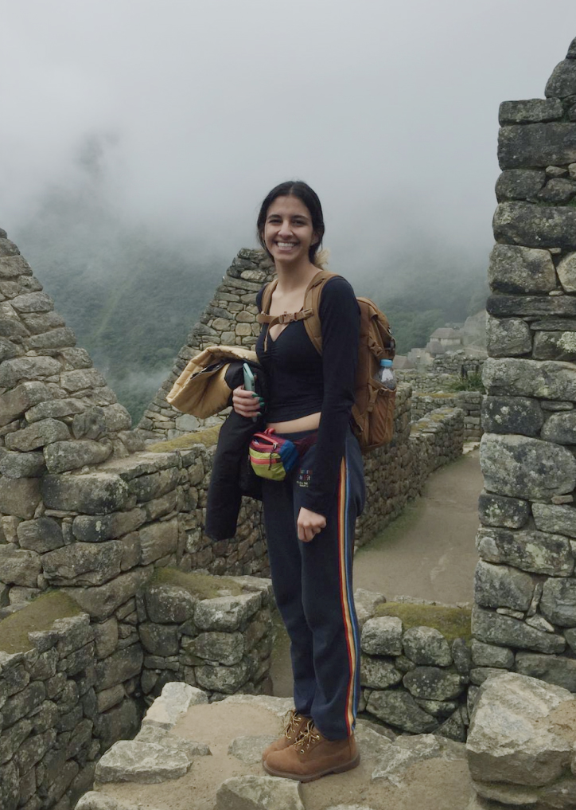

Inspired to design and develop accessible medical devices, especially for women...
I was born and raised in Lima, Peru.
A special thank you to my family especially to my mom Lucy, and to my dad Pepe; for always being there and making all of this possible :)